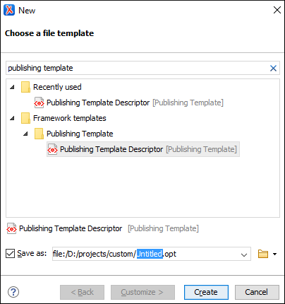

How to Create a Publishing Template
To create a customization, you can start from scratch or from an existing template, and then adapt it according to your needs.
Creating a Template Starting from Scratch
- Create a folder that will contain all the template files.
-
In Oxygen XML Editor/Author, open the new document wizard (use or the New toolbar button), then choose the Publishing Template Descriptor template.
Figure 1. Choosing the Publishing Template Descriptor Document Template  - Save the .opt file into your customization directory.
- Open the .opt file in the editor and customize it to suit your needs. See: Publishing Template Package Contents for PDF Customizations and Publishing Template Package Contents for WebHelp Responsive Customizations.
Creating a Template Starting from an Existing Template
If you are using a WebHelp Responsive or DITA Map PDF - based on HTML5 & CSS transformation, the easiest way to create a new Oxygen Publishing Template is to select an existing template in the transformation scenario dialog box and use the Save template as button to save that template into a new template package that can be used as a starting point.
- Open the transformation scenario dialog box and select the publishing template you want to export and use as a starting point.
-
Optional: You can set one or more transformation parameters from the Parameters tab and the edited parameters will be exported along with the selected template. You will see which parameters will be exported in the dialog box that is displayed after the next step.
-
Click the Save template as button.
Step Result: This opens a template package configuration dialog box that contains some options and displays the parameters that will be exported to your template package.
- Specify a name for the new template.
- Optional: Specify a template description.
- Optional: The same publishing template package can contain both a WebHelp Responsive and PDF customization and you can use the same template in both types of transformations (DITA Map WebHelp Responsive or DITA Map to PDF - based on HTML5 & CSS). You can use the Include WebHelp customization and Include PDF customization options to specify whether your custom template will include both types of customizations.
- Optional: For WebHelp Responsive customizations, you can select the Include HTML Page Layout Files option if you want to copy the default HTML Page Layout FilesHTML Page Layout Files in your template package. They are helpful if you want to change the structure of the generated HTML pages.
-
In the Save as field, specify the name and path of the ZIP file where the template will be saved.
Step Result: A new ZIP archive will be created on disk in the specified location with the specified name.
- Open the .opt file in the editor and customize it to suit your needs. See: Publishing Template Package Contents for PDF Customizations and Publishing Template Package Contents for WebHelp Responsive Customizations.
For more information about creating and customizing publishing templates, watch our video demonstration: